全身無力與下運動神經元（LMN）疾病的臨床思路
原標題：Down and Out: Finding Footing in the Weak and Wobbly — A Clinical Approach to Generalized Weakness and LMN Disease
官方中文題目：無力與步態不穩：重新找回平衡——全身性無力與下運動神經元疾病的臨床診斷思路
主講：洪亘屏（S. Hong）｜2026 年 11 月 1 日 11:00–12:30｜FASAVA 2026 F 廳（全英文）｜場次 02
第 1–4 節是課前依教科書寫的預習架構；第 5 節是課堂現場投影片，上課中陸續補上。兩者不一致時以第 5 節（講者）為準。
⭐ 本場三個學習目標
- 全身無力的三個來源：全身性疾病、中樞神經病灶、下運動神經元單位疾病
- 區分 LMN 的三類：神經病變、神經肌肉接合處病變、肌病
- 依初步篩檢結果，分階段選擇並判讀進階檢查
- 最後目標：列出有優先順序的鑑別診斷，引導下一步臨床決策
場次資訊與學習目標
▾時間與講者
- 講者：洪亘屏（S. Hong）；2026-11-01 11:00–12:30，F 廳，全英文授課。
- 同一位講者上午先講 01 前庭系統定位。
📋 摘要 場次概要
這一場提供一套系統性的方法來處理全身無力的病患，先打好定位的基礎。重點放在區分下運動神經元疾病的臨床特徵與神經學檢查發現，包括神經病變（neuropathy）、接合處病變（junctionopathy）和肌病（myopathy），再據此列出有優先順序的鑑別診斷。接著建立分階段的診斷流程：以初步篩檢資料為基礎，合理地選擇並判讀進階輔助檢查，以取得確定診斷。
📋 摘要 學習目標
- 記得全身無力定位的三個主要來源：全身性疾病、中樞神經病灶、下運動神經元單位的疾病。
- 區分下運動神經病變、接合處病變和肌病的臨床表現，列出有優先順序的鑑別診斷。
- 以初步篩檢結果為基礎，建立逐步的診斷流程，適當選擇並判讀進階檢查，引導後續臨床決策。
1. 全身無力的三個來源
▾💡 「無力」是飼主最常見的主訴之一，但不一定是神經問題。第一步是分清楚是哪一類：
| 來源 | 線索 | 常見例子 |
|---|---|---|
| 全身性疾病（不是神經） | 神經學檢查大致正常；虛弱、運動不耐、精神差；常有心肺或代謝異常 | 貧血、低血糖、電解質異常（低血鉀、低血鈣、高血鉀）、心臟病或心律不整、Addison、甲狀腺功能低下、發燒、疼痛 |
| 中樞神經病灶（UMN） | 反射正常或增強、肌張力正常或增加；本體感覺缺損明顯；可能有意識改變或腦神經症狀 | 頸髓病灶（四肢輕癱）、腦幹病灶 |
| LMN 單位疾病 | 反射減弱或消失、肌張力降低、肌肉萎縮快；本體感覺相對保留 | 多發性神經病、重症肌無力、肉毒桿菌、蜱麻痺、肌炎 |
2. 神經病變、接合處病變、肌病
▾💡 三類 LMN 疾病的典型差異（教科書整理，有很多重疊）：
| 神經病變 | 接合處病變 | 肌病 | |
|---|---|---|---|
| 脊髓反射 | 減弱或消失 | 多半正常，嚴重時減弱 | 多半正常 |
| 肌張力 | 降低 | 正常或降低 | 正常、降低，或僵硬 |
| 本體感覺 | 可能異常（感覺纖維受影響時） | 正常 | 正常 |
| 肌肉萎縮 | 快、明顯（神經性萎縮） | 通常不明顯 | 可萎縮或肥大 |
| 運動誘發 | 不明顯 | 運動後惡化、休息後恢復 | 可能運動不耐、步幅短、僵硬步態 |
| 疼痛 | 神經根病變可能痛 | 不痛 | 肌炎可能痛 |
| CK | 正常或輕度上升 | 正常 | 常上升 |
| 巨食道、吞嚥、發聲改變 | 可能 | 常見 | 可能（食道肌炎） |
| 代表疾病 | 多發性神經根神經炎（浣熊獵犬癱瘓）、糖尿病神經病變（貓蹠行）、甲狀腺功能低下、副腫瘤性、遺傳性 | 後天型重症肌無力、肉毒桿菌、蜱麻痺、有機磷中毒 | 多發性肌炎、咀嚼肌炎、低血鉀性肌病（貓頸部腹屈）、內分泌性肌病、肌肉失養症 |
3. 分階段的診斷流程
▾💡 講者強調「以初步篩檢為基礎，再選進階檢查」。一般的分層：
| 階段 | 檢查 | 主要目的 |
|---|---|---|
| 第一階段：篩檢 | CBC、生化（含電解質、血糖、CK）、尿液檢查、血壓、心電圖 | 排除全身性原因；CK 上升指向肌病 |
| 胸腔 X 光 | 巨食道、吸入性肺炎、前縱膈腫塊（胸腺瘤）、轉移 | |
| 內分泌：TT4／TSH、ACTH 刺激試驗（依病史） | 甲狀腺功能低下、Addison、Cushing 肌病 | |
| 第二階段：針對性 | 乙醯膽鹼受體抗體（重症肌無力的確診檢查） | 接合處病變 |
| 腹部超音波、感染性疾病檢驗（如 Toxoplasma、Neospora） | 副腫瘤性、感染性肌炎或神經炎 | |
| 第三階段：電生理（麻醉下） | 肌電圖（EMG）、神經傳導速度（NCV）、反覆神經刺激、F 波 | 區分神經病變、接合處病變、肌病，並找出受影響的肌肉作為切片位置 |
| 第四階段：組織 | 肌肉切片、神經切片（送專門的神經肌肉實驗室） | 確定診斷 |
4. 課前思考題
▾- 一隻四肢無力的狗，四肢脊髓反射都減弱：要怎麼區分是 LMN 疾病，還是嚴重的頸髓病灶？
- 運動後惡化、休息後恢復的無力，最先想到哪一類？確診要驗什麼？
- 貓頸部腹屈（cervical ventroflexion）時，第一階段篩檢最先看哪一個數值？
- 什麼時候需要 EMG／NCV，什麼時候篩檢就足以下診斷？
上課後依講者的說法補上答案。
5. 課堂內容（現場投影片）
▾📸 現場 大綱
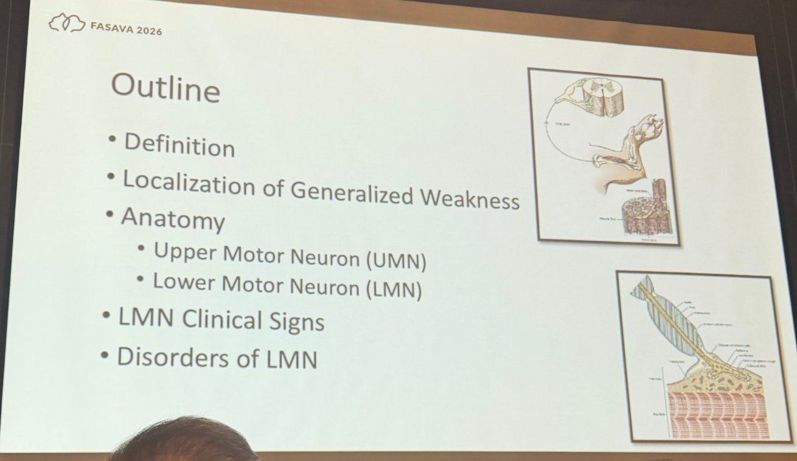
- 定義
- 全身無力的定位
- 解剖：上運動神經元（UMN）、下運動神經元（LMN）
- LMN 的臨床症狀
- LMN 疾病
📸 現場 定義：全身無力
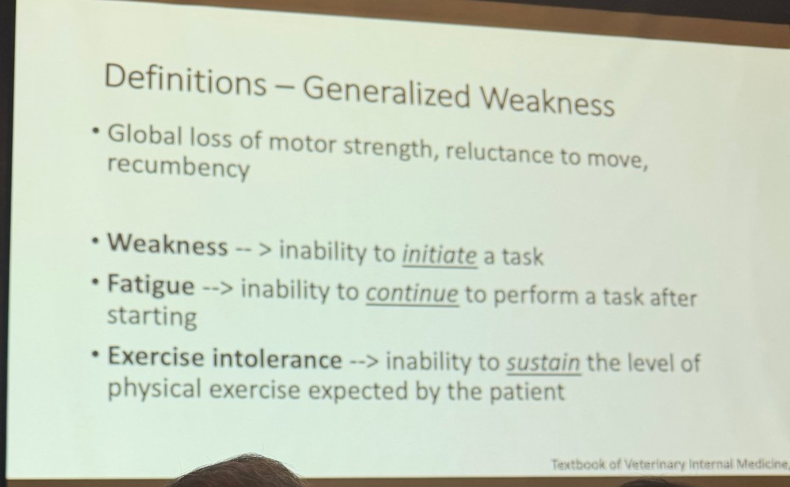
- 全身無力：全身性的運動肌力喪失、不願意動、躺臥。
| 名詞 | 意思 | 關鍵字 |
|---|---|---|
| 虛弱（weakness） | 無法開始一個動作 | initiate |
| 疲勞（fatigue） | 開始後無法持續做下去 | continue |
| 運動不耐（exercise intolerance） | 無法維持應有的運動量 | sustain |
💡 問診時分清楚這三種，可以直接縮小範圍：「一開始就站不起來」是虛弱；「走一走才倒下、休息後又好」是疲勞，最典型的是重症肌無力（第 2 節的接合處病變）。
📸 現場 診斷思路：先排除全身性疾病！！
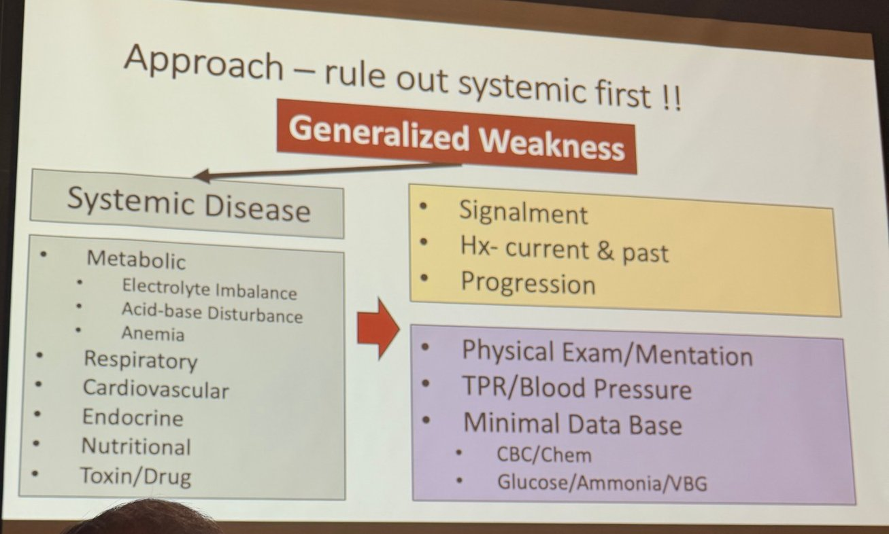
全身性疾病
- 代謝：電解質失衡、酸鹼異常、貧血
- 呼吸
- 心血管
- 內分泌
- 營養
- 毒素／藥物
怎麼排除
- 基本資料、病史（現在與過去）、進展
- 理學檢查與意識狀態
- 體溫、心跳、呼吸、血壓
- 基本資料庫：CBC、生化；血糖、血氨、靜脈血氣
💡 和第 1 節預習表的第一列一致：神經系統之前，先看血糖、電解質（鉀、鈣）、貧血、心律。血氨是為了抓肝性腦病，靜脈血氣抓酸鹼與鉀。
📸 現場 步態的產生（Gait Generation）
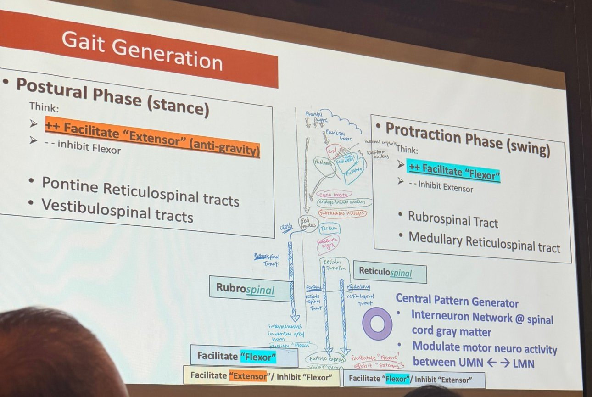
站立期（Postural phase, stance）
- 促進伸肌（抗重力）、抑制屈肌
- 橋腦網狀脊髓徑
- 前庭脊髓徑
擺動期（Protraction phase, swing）
- 促進屈肌、抑制伸肌
- 紅核脊髓徑
- 延腦網狀脊髓徑
- 中樞模式產生器（central pattern generator）：脊髓灰質中的中間神經元網路，在 UMN 與 LMN 之間調節運動神經元的活動。
- 手繪圖：大腦皮質（額葉、頂葉）→ 內囊、基底核 → 紅核（交叉）→ 紅核脊髓徑 → 腹角中間神經元，促進屈肌；網狀結構 → 橋腦網狀脊髓徑（促進伸肌）、延腦網狀脊髓徑（促進屈肌）。
💡 這是 UMN 的部分。UMN 病灶時這些下行徑對伸肌的抑制減少，所以出現肌張力和反射增強、步幅變長的痙攣性步態；這正是和 LMN（反射減弱、肌張力低）區分的基礎。前庭脊髓徑也出現在 01 前庭第 3 節。
📸 現場 步態產生總結：無力來自 CNS 還是 LMN？
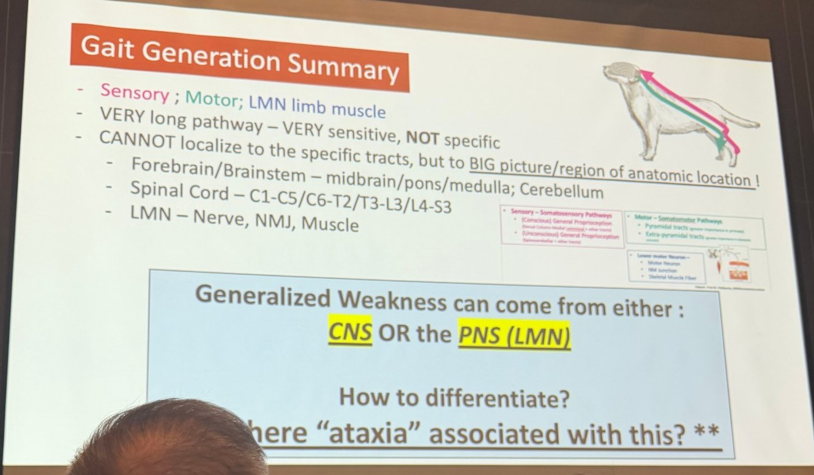
- 步態需要三部分：感覺（本體感覺路徑）、運動（UMN 下行徑）、LMN 與肢體肌肉。
- 路徑非常長：對病灶非常敏感，但不具特異性。
- 無法定位到某一條傳導徑，只能定位到大區域：
- 前腦／腦幹（中腦、橋腦、延腦）；小腦
- 脊髓：C1–C5、C6–T2、T3–L3、L4–S3
- LMN：神經、神經肌肉接合處、肌肉
💡 這一句就是本場的核心。LMN 病患「走不動」但「走得準」；CNS 病患除了無力，還會「走不穩、腳放錯位置」。再加上反射：LMN 減弱，UMN 正常或增強（第 1、2 節的表）。
📸 現場 UMN vs LMN
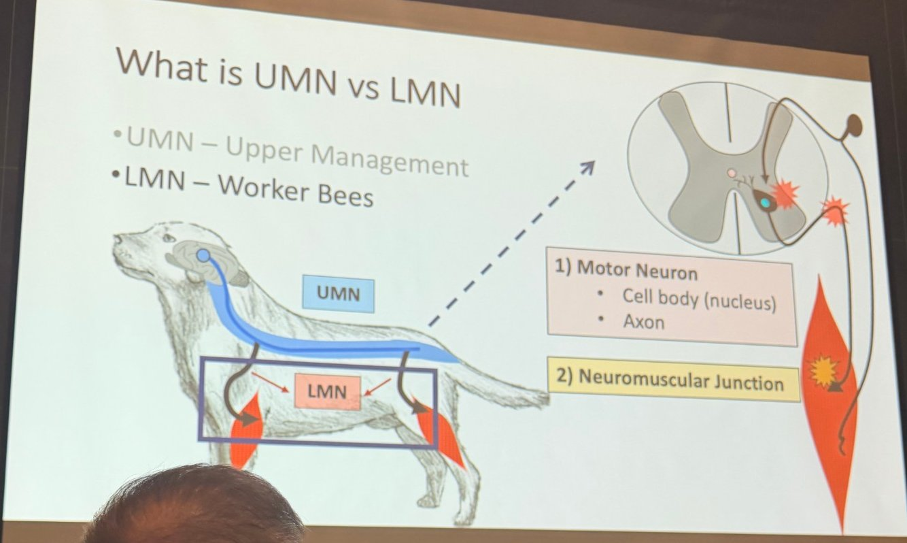
- UMN＝上層管理（Upper Management）：從腦往下到脊髓，負責發號施令、調節。
- LMN＝工蜂（Worker Bees）：真正讓肌肉動起來的執行者。
- LMN 單位包括：
- 運動神經元：細胞本體（腹角）、軸突（周邊神經）
- 神經肌肉接合處
💡 比喻很好記：管理層（UMN）出問題，工蜂還在、只是亂做（反射亢進、肌肉張力高）；工蜂（LMN）倒了，就完全做不了（反射消失、肌肉張力低、快速萎縮）。
📸 現場 LMN 的臨床症狀
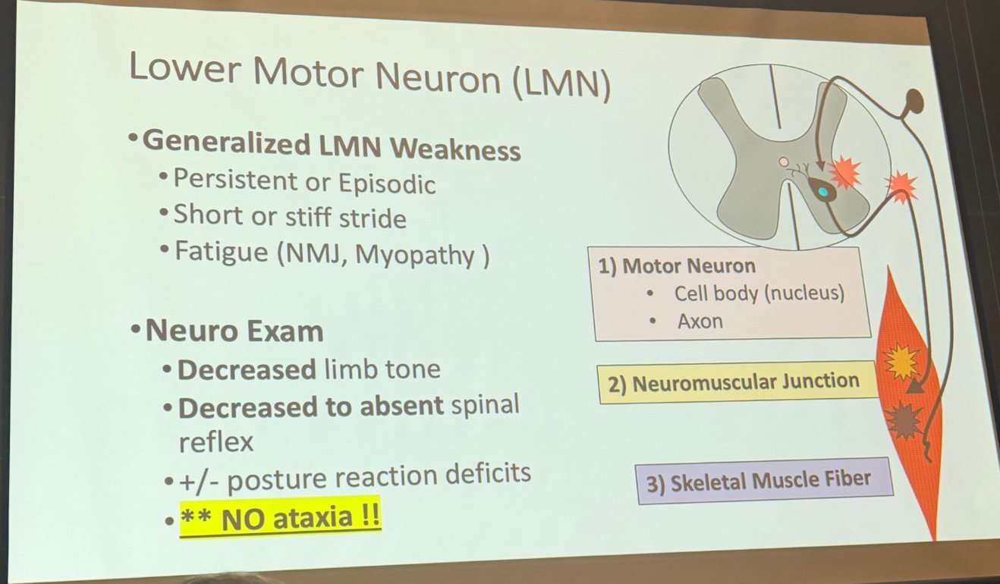
全身性 LMN 無力的表現
- 持續性或陣發性
- 步幅短或僵硬
- 疲勞（接合處病變、肌病）
神經學檢查
- 肢體肌張力降低
- 脊髓反射降低到消失
- ± 姿勢反應缺損
- 沒有運動失調！！
LMN 單位三部分：① 運動神經元（細胞本體、軸突）② 神經肌肉接合處 ③ 骨骼肌纖維。
💡 「± 姿勢反應缺損」的原因：LMN 病患肌力太弱，可能撐不住而做不好姿勢反應，但這是無力造成，不是本體感覺錯誤；只要撐住身體，腳放的位置是對的。這和預習第 1、2 節的表一致：陣發性、運動後惡化指向接合處病變（重症肌無力），僵硬短步幅常見於肌病。
📸 現場 區分 CNS 與 PNS（LMN）
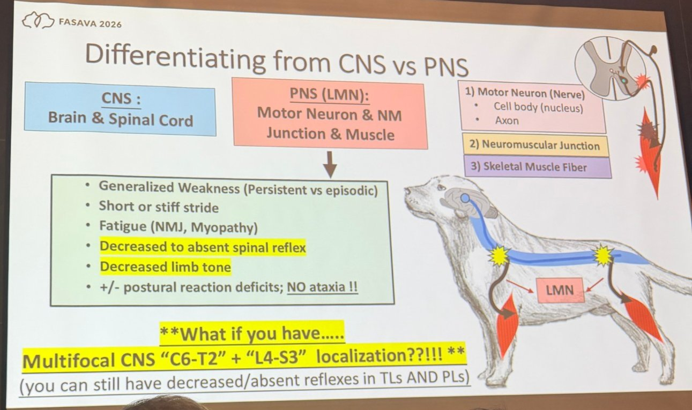
CNS
- 腦與脊髓
PNS（LMN）
- 運動神經元、神經肌肉接合處、肌肉
- 全身無力（持續或陣發）、步幅短或僵硬、疲勞
- 脊髓反射降低到消失、肢體張力降低
- ± 姿勢反應缺損；沒有運動失調
💡 C6–T2（頸胸膨大）和 L4–S3（腰薦膨大）是四肢 LMN 細胞本體所在，這兩段脊髓同時受損，四肢都會出現 LMN 徵象。區分的線索：脊髓病灶通常會有運動失調與本體感覺缺損、可能有脊椎疼痛或排尿異常，且分布常不對稱；真正的全身性 LMN 疾病沒有運動失調、常對稱，還可能有巨食道、發聲改變、顏面無力等腦神經 LMN 徵象。
📸 現場 陣發性 vs 持續性無力
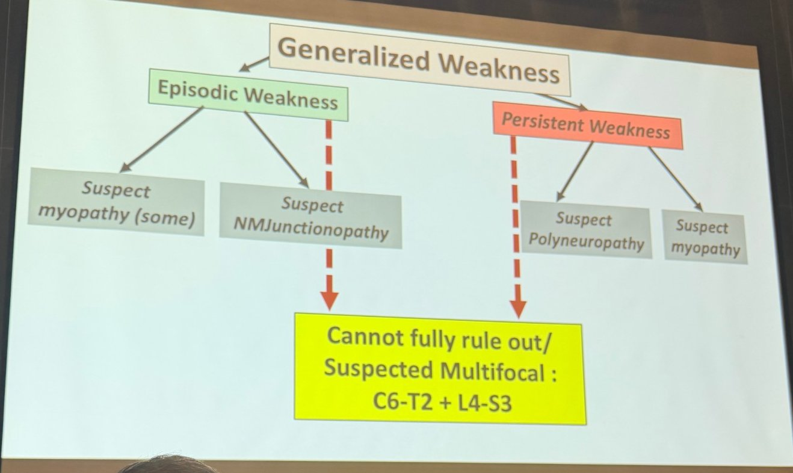
| 型態 | 懷疑 |
|---|---|
| 陣發性無力 | 神經肌肉接合處病變；部分肌病 |
| 持續性無力 | 多發性神經病變；肌病 |
| 兩者皆可能 | 無法完全排除：多發病灶 C6–T2 ＋ L4–S3（上一張的陷阱） |
💡 實用：先問「是一陣一陣，還是一直都這樣？」陣發性先想重症肌無力（驗乙醯膽鹼受體抗體），也別忘了全身性的陣發原因（低血糖、心律不整、低血鉀）；持續性再用反射與肌張力區分神經病變（反射消失、萎縮快）和肌病（反射多正常、CK 上升）。
📸 現場 持續性全身無力的鑑別診斷（DAMNIT-V）
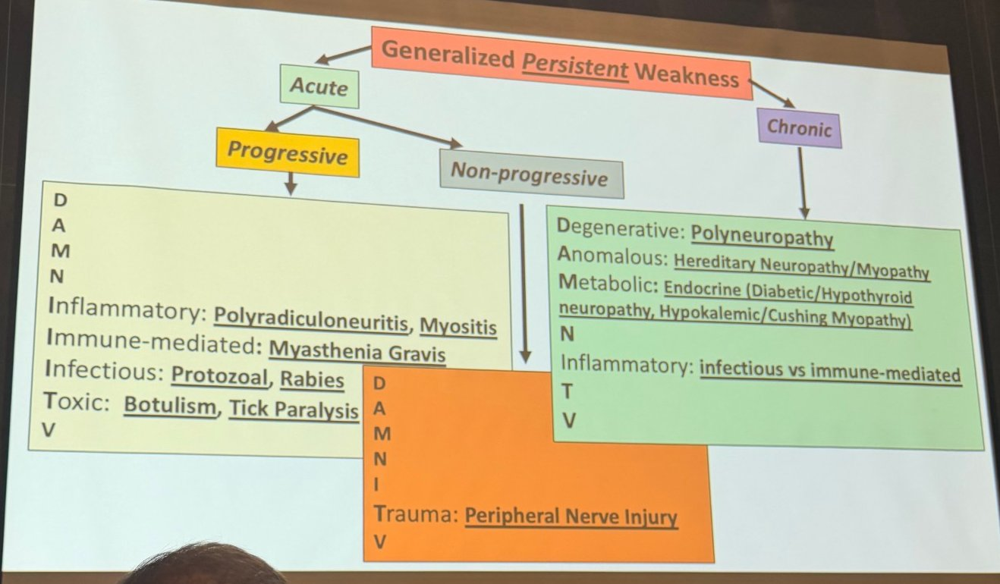
急性、進展
- 發炎：多發性神經根神經炎、肌炎
- 免疫媒介：重症肌無力
- 感染：原蟲、狂犬病
- 中毒：肉毒桿菌、蜱麻痺
急性、不進展
- 外傷：周邊神經損傷
慢性
- 退化：多發性神經病變
- 先天異常：遺傳性神經病變／肌病
- 代謝：內分泌（糖尿病、甲狀腺低下神經病變；低血鉀、庫欣肌病）
- 發炎：感染 vs 免疫媒介
📸 講者接著在同一張投影片上把多發性神經根神經炎、原蟲、狂犬病標黃，作為接下來詳細介紹的重點。（這一版的「慢性／代謝」只列糖尿病、甲狀腺低下神經病變與庫欣肌病。）
💡 臨床上最常見的「急性進展」三巨頭：多發性神經根神經炎（浣熊獵犬癱瘓）、肉毒桿菌、蜱麻痺；台灣少見蜱麻痺，但要問有沒有吃腐肉（肉毒桿菌）。原蟲指 Toxoplasma、Neospora（幼犬的後肢伸直僵硬）。慢性要先驗血糖、TT4、鉀、ACTH 刺激，代謝性原因可治療。
📸 現場 神經病變（Neuropathy）的表現
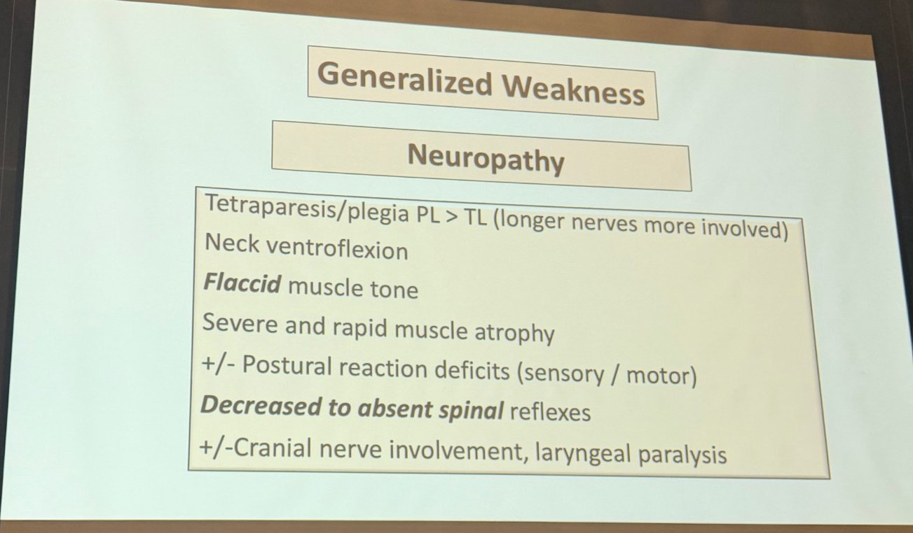
- 四肢輕癱／癱瘓，後肢 > 前肢（越長的神經越先受影響）。
- 頸部腹屈。
- 弛緩性肌張力（flaccid）。
- 嚴重且快速的肌肉萎縮。
- ± 姿勢反應缺損（感覺或運動纖維受影響）。
- 脊髓反射降低到消失。
- ± 腦神經受影響、喉麻痺。
💡 和預習第 2 節的表對照：神經病變是三類裡唯一反射明顯消失＋萎縮又快又重的；接合處病變反射多正常、主要是疲勞；肌病反射多正常、CK 上升。老年大型犬（如拉布拉多）出現喉麻痺＋後肢無力，要想到多發性神經病變（GOLPP，老年型喉麻痺多發性神經病變）。
📸 現場 周邊神經損傷：神經斷傷（Neurotmesis）
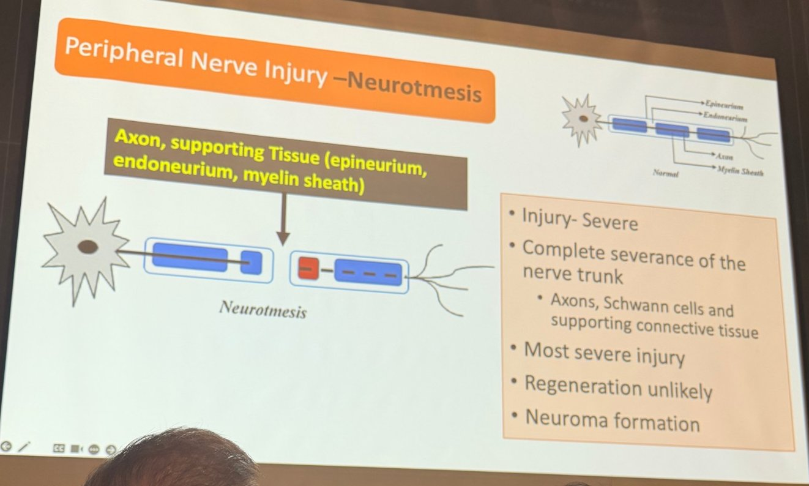
- 損傷嚴重：神經幹完全斷裂，包括軸突、許旺細胞與支持結締組織。
- 最嚴重的一級。
- 不太可能再生。
- 會形成神經瘤（neuroma）。
💡 周邊神經損傷的三級分類（Seddon），本張是第三級；前兩級的投影片沒拍到，先依教科書補上：
| 分級 | 受損構造 | 預後 |
|---|---|---|
| 神經失用（neurapraxia） | 只有髓鞘局部受損，軸突完整 | 好，數天到數週恢復 |
| 軸突斷傷（axonotmesis） | 軸突斷裂，但神經內膜等支持組織完整 | 可再生（約每天 1 mm），恢復需數週到數月 |
| 神經斷傷（neurotmesis） | 軸突＋所有支持組織完全斷裂 | 差，需手術接合；常形成神經瘤 |
這屬於上面 DAMNIT-V 表中「急性、不進展」的外傷（如臂神經叢撕裂傷）。
📸 現場 病例 Chloe：7 歲 Irish Wolfhound（62 kg）
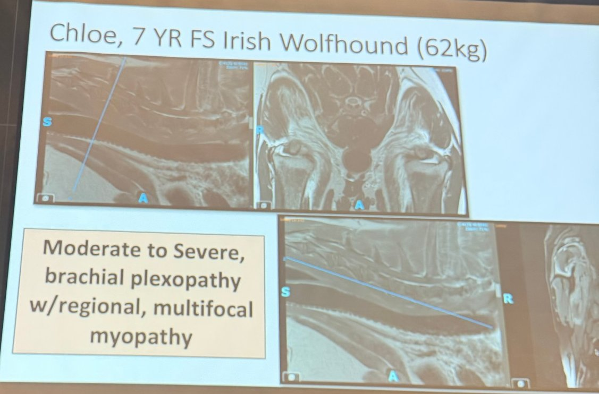
- 7 歲已絕育母犬，愛爾蘭獵狼犬，62 kg。前肢向外張開（splayed out）、倒地。
- 臂神經叢 MRI：中度到重度臂神經叢病變，合併局部、多發的肌病。
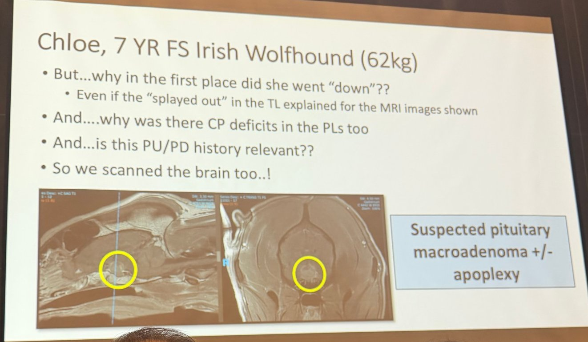
- 但是……
- 她一開始為什麼會倒下？前肢張開可以用臂神經叢的 MRI 解釋，但……
- 為什麼後肢也有本體感覺缺損？
- 多尿多渴的病史有沒有關係？
- 腦部 MRI：疑似腦下垂體巨腺瘤 ± 出血（apoplexy）。
📸 現場 急性進展周邊神經病變：多發性神經根神經炎（Polyradiculoneuritis）
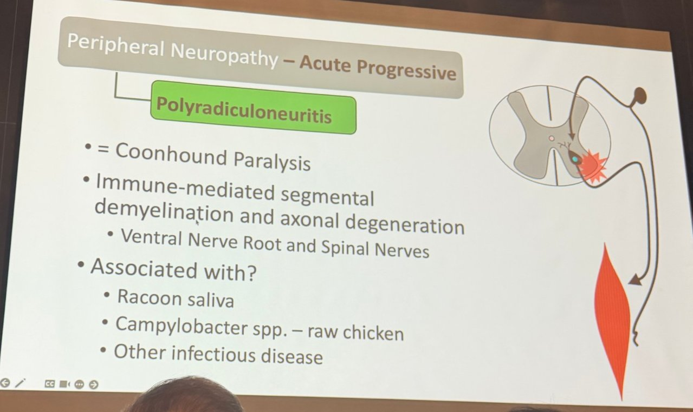
- ＝浣熊獵犬癱瘓（Coonhound paralysis）。
- 免疫媒介的節段性脫髓鞘與軸突退化，侵犯腹側神經根與脊神經。
- 相關因素：
- 浣熊唾液
- Campylobacter spp.：生雞肉
- 其他感染性疾病
💡 台灣沒有浣熊，但生食飲食（生雞肉）的狗越來越多，是重要的問診項目，類似人的 Guillain-Barré 症候群（也和 Campylobacter 有關）。因為侵犯的是腹側（運動）神經根，所以病患四肢無力、反射消失，但痛覺通常保留、甚至感覺過敏；常從後肢開始往前進展，嚴重時影響呼吸肌，要監測呼吸。
📸 現場 診斷
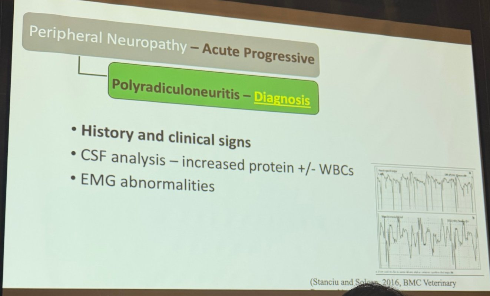
- 病史與臨床症狀（最主要）。
- 腦脊髓液：蛋白上升 ± 白血球增加。
- 肌電圖（EMG）異常。
💡 確診多半靠病史＋症狀；CSF 蛋白上升而細胞數正常（蛋白細胞分離）是典型表現，最好採腰椎 CSF（較靠近受影響的神經根）。EMG 在發病約 5–7 天後才會出現自發性異常電位，太早做可能正常。
📸 現場 治療
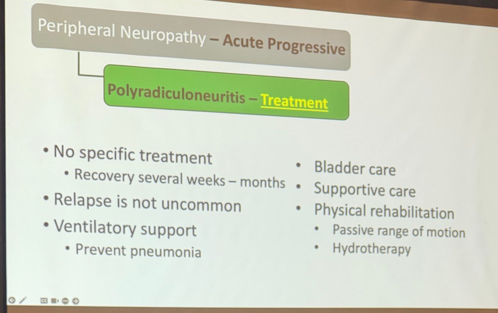
原則與預後
- 沒有特定治療
- 恢復需要數週到數月
- 復發並不少見
- 呼吸支持（必要時），預防肺炎
照護
- 膀胱照護
- 支持療法
- 物理復健：被動關節活動、水療
💡 重點是「護理」：躺臥的病患要勤翻身防褥瘡、維持營養、擠尿或導尿、監測呼吸（嚴重時呼吸肌麻痺）。類固醇在狗沒有證據有效；人的 Guillain-Barré 用免疫球蛋白（IVIG），狗有少數報告。復發與再次接觸誘因（如生雞肉）有關，恢復後要調整飲食。
📸 現場 急性進展：原蟲性多發神經炎（Protozoal Polyneuritis）
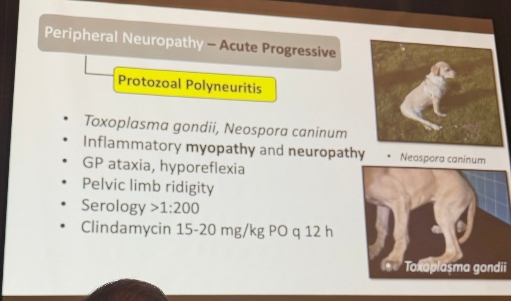
- 病原：Toxoplasma gondii、Neospora caninum。
- 造成發炎性肌病與神經病變。
- 本體感覺性運動失調、反射低下。
- 後肢僵直。
- 血清學 > 1:200。
- 治療：clindamycin 15–20 mg/kg PO q12h。
💡 典型是幼犬（經胎盤感染的 Neospora）後肢伸直僵硬（肌肉攣縮），越早治療越好，攣縮出現後常無法逆轉。同胎的其他幼犬也要檢查。注意這類「有運動失調」是因為同時侵犯神經根與脊髓，和單純 LMN 疾病不同。
📸 現場 慢性進展：多發性神經病變的後果
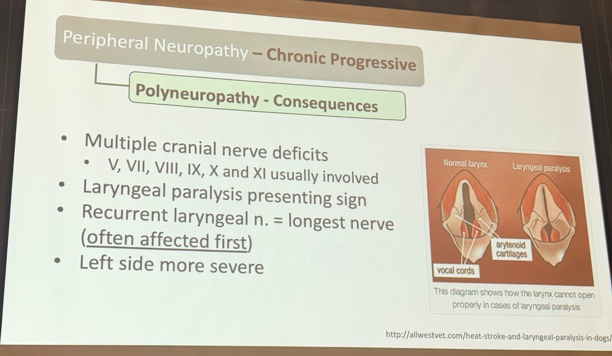
- 多條腦神經缺損：通常是 V、VII、VIII、IX、X、XI。
- 喉麻痺常是最先出現的症狀。
- 喉返神經是最長的神經，所以常常最先受影響。
- 左側較嚴重。
💡 左側喉返神經繞過主動脈弓，比右側（繞過鎖骨下動脈）更長，所以左側先、也更嚴重。這呼應上面「越長的神經越先受影響」：後肢比前肢先、喉頭比其他腦神經先。老年狗喘鳴、叫聲改變、運動不耐，加上後肢無力，就是 GOLPP；喉麻痺手術前要先評估巨食道與吞嚥（吸入性肺炎風險）。
📸 現場 神經肌肉接合處（NMJ）
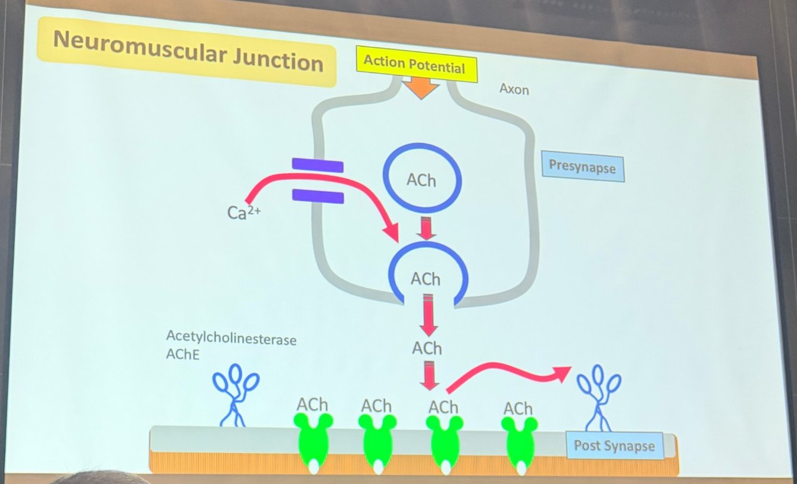
- 動作電位傳到軸突末端（突觸前）。
- 鈣離子（Ca²⁺）經通道流入。
- 含乙醯膽鹼（ACh）的囊泡與細胞膜融合，釋放 ACh。
- ACh 結合突觸後（肌肉端）的 ACh 受體，引起肌肉收縮。
- 乙醯膽鹼酯酶（AChE）分解 ACh，結束訊號。
💡 每一步都對應一種疾病：
| 步驟 | 疾病 |
|---|---|
| ACh 釋放（突觸前） | 肉毒桿菌（阻止釋放）、蜱麻痺（干擾釋放） |
| ACh 受體（突觸後） | 重症肌無力（抗受體抗體） |
| AChE 分解 | 有機磷／胺基甲酸鹽中毒（抑制 AChE，ACh 過量） |
也因此重症肌無力可用 AChE 抑制劑（pyridostigmine）治療：讓 ACh 停留更久，彌補受體不足。
📸 現場 NMJ 疾病的機轉
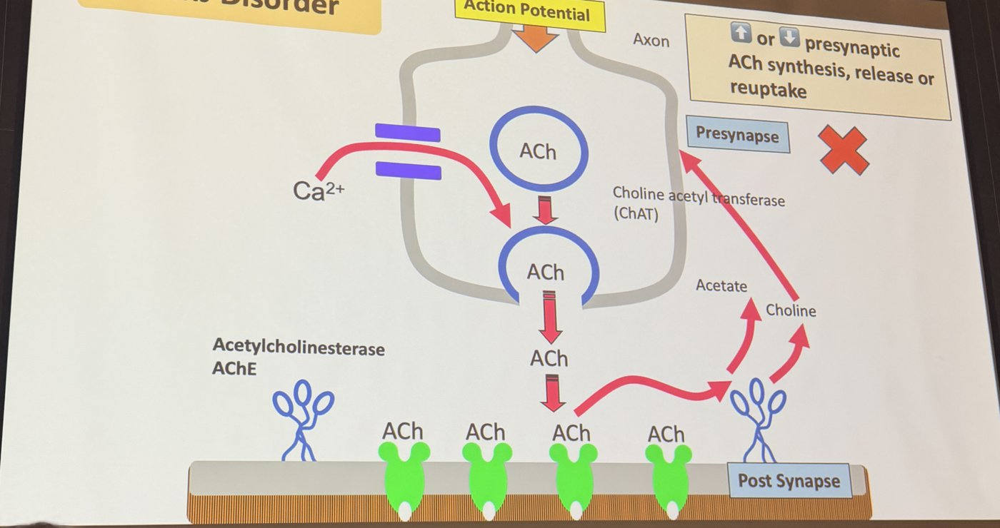
- NMJ 疾病＝突觸前 ACh 的合成、釋放或回收增加或減少。
- 回收途徑：AChE 把 ACh 分解成醋酸與膽鹼，膽鹼回到突觸前，由膽鹼乙醯轉移酶（ChAT）重新合成 ACh。
📸 現場 接合處病變：陣發還是持續？
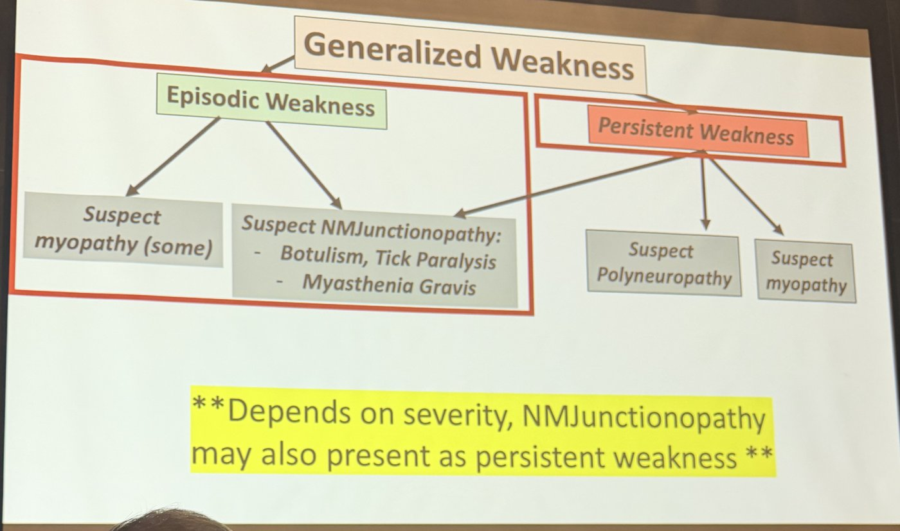
- 懷疑接合處病變：肉毒桿菌、蜱麻痺；重症肌無力。
- 依嚴重度，接合處病變也可能表現為持續性無力（流程圖上持續性無力也有箭頭指向接合處病變）。
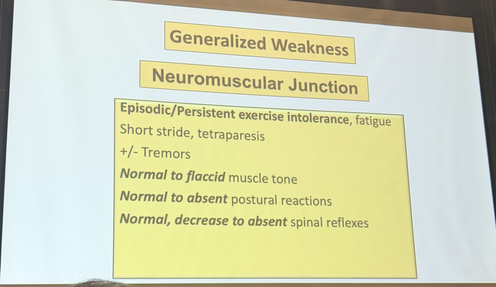
| 項目 | 接合處病變 |
|---|---|
| 表現 | 陣發或持續的運動不耐、疲勞；步幅短、四肢輕癱；± 顫抖 |
| 肌張力 | 正常到弛緩 |
| 姿勢反應 | 正常到消失 |
| 脊髓反射 | 正常、降低到消失 |
💡 和神經病變比：接合處病變的範圍「正常到消失」都有，輕的重症肌無力休息時檢查可能完全正常（要讓牠走一走再看）；嚴重的肉毒桿菌、蜱麻痺則和神經病變一樣完全弛緩、反射消失。沒有快速肌肉萎縮是和神經病變的區別之一。
📸 現場 急性進展接合處病變：蜱麻痺（Tick Paralysis）
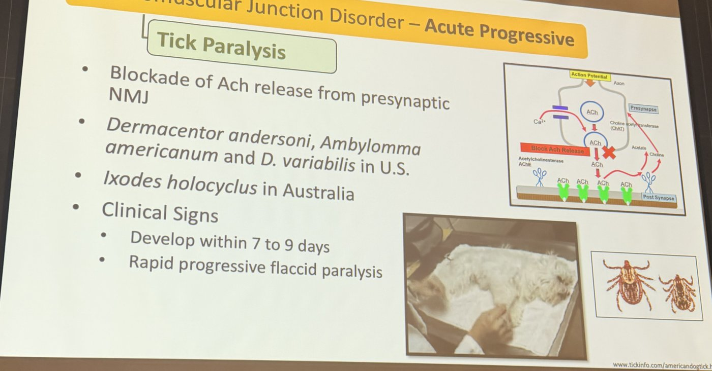
- 阻斷突觸前 ACh 釋放。
- 美國：Dermacentor andersoni、Amblyomma americanum、D. variabilis；澳洲：Ixodes holocyclus。
- 症狀在（蜱叮咬後）7–9 天內出現；快速進展的弛緩性癱瘓。
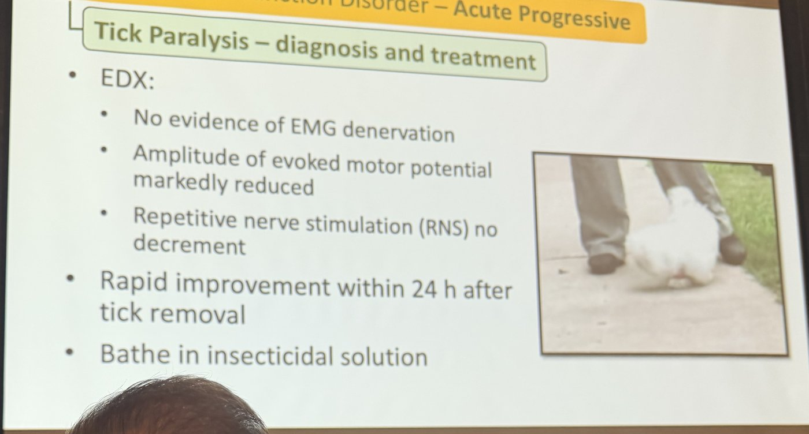
- 電學診斷（EDX）：
- EMG 沒有去神經化的證據。
- 誘發運動電位的振幅明顯降低。
- 反覆神經刺激（RNS）沒有遞減。
- 移除蜱後 24 小時內快速改善。
- 用殺蟲藥液洗澡。
💡 最好的「診斷」就是仔細全身找蜱（包括趾間、耳道、肛門周圍），移除後很快好轉就確診。RNS 沒有遞減可和重症肌無力（RNS 遞減）區分。澳洲的 Ixodes holocyclus 較嚴重，需要抗毒素；北美型移除後通常很快恢復。台灣不是典型流行區，但有旅遊史或戶外活動的狗仍要檢查。
📸 現場 急性進展接合處病變：肉毒桿菌中毒（Botulism）
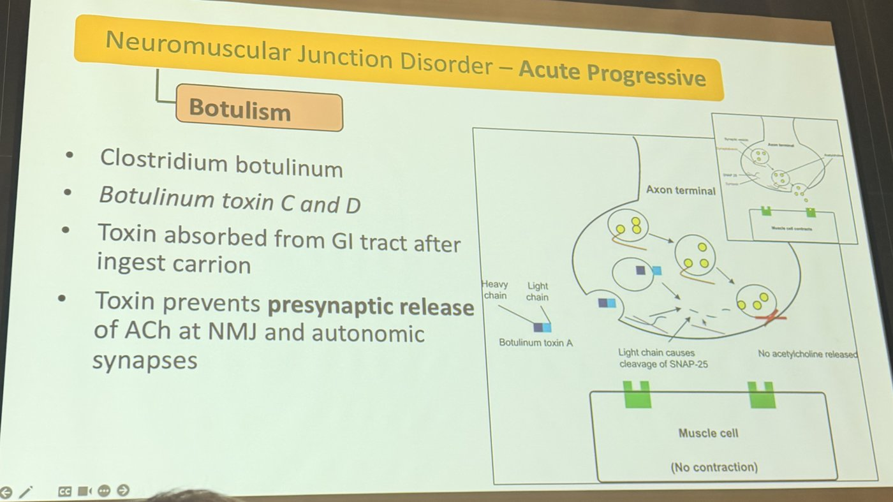
- Clostridium botulinum；狗主要是毒素 C 和 D。
- 吃了腐肉後，毒素從腸胃道吸收。
- 毒素阻止 ACh 在神經肌肉接合處與自主神經突觸的突觸前釋放（輕鏈切斷 SNAP-25）。
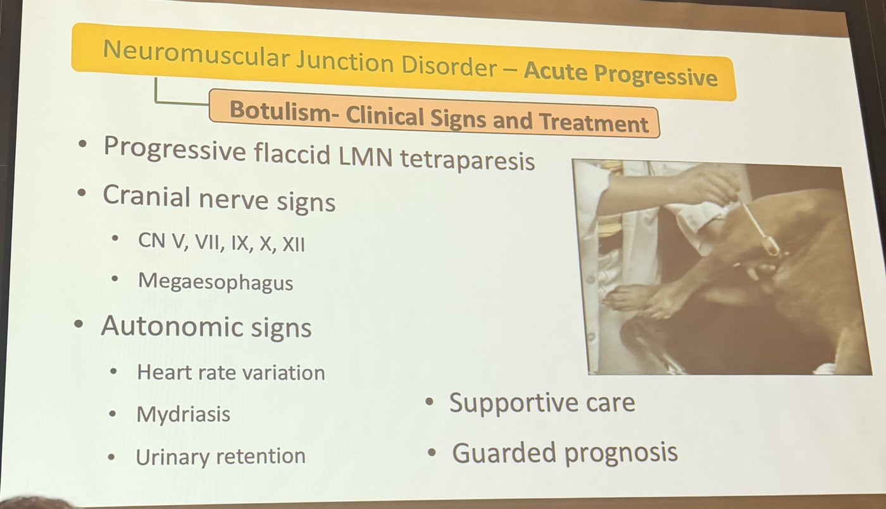
臨床症狀
- 進展性弛緩性 LMN 四肢輕癱
- 腦神經：CN V、VII、IX、X、XII；巨食道
- 自主神經症狀：心跳變化、瞳孔放大、尿滯留
治療與預後
- 支持療法
- 預後保留
💡 和蜱麻痺、多發性神經根神經炎最大的不同是自主神經症狀（瞳孔放大、尿滯留、心跳變化）和明顯的腦神經／巨食道：因為毒素也作用在自主神經突觸。病史問「有沒有吃垃圾、腐肉、生肉」。巨食道病患要預防吸入性肺炎；多數輕中度病例 2–3 週內恢復。
📸 現場 陣發性接合處病變：重症肌無力（Myasthenia Gravis）
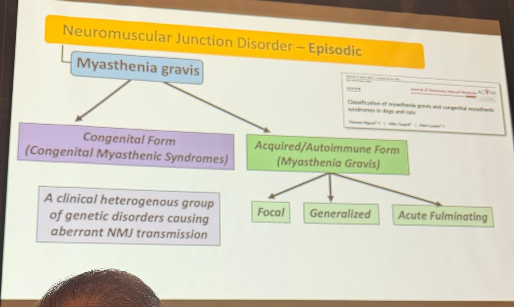
- 先天型（先天性肌無力症候群）：一群臨床表現各異、造成 NMJ 傳導異常的遺傳疾病。
- 後天／自體免疫型（重症肌無力）：分局部型、全身型、急性猛爆型。
📸 現場 先天型（先天性肌無力症候群）
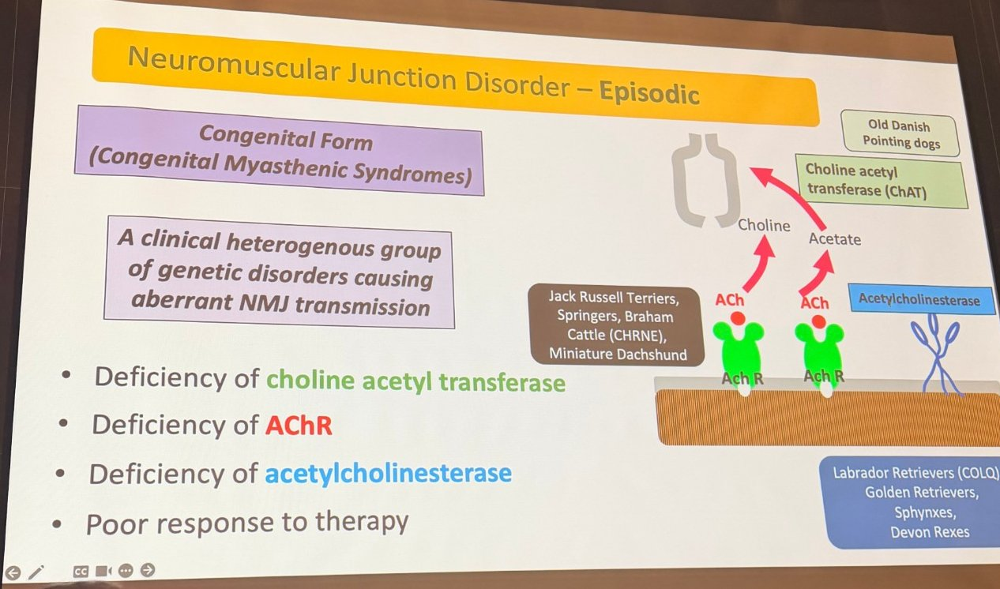
| 缺乏 | 好發品種 |
|---|---|
| 膽鹼乙醯轉移酶（ChAT） | Old Danish Pointing dog |
| ACh 受體 | Jack Russell Terrier、Springer、Brahman 牛（CHRNE）、迷你臘腸 |
| 乙醯膽鹼酯酶 | 拉布拉多（COLQ）、黃金獵犬、Sphynx、Devon Rex |
- 對治療反應差。
💡 先天型通常在幼年（數週到數月大）就出現運動後無力；ACh 受體抗體陰性（不是免疫造成），要靠基因檢測或肌肉切片。AChE 缺乏型用 pyridostigmine 反而會更糟（ACh 已經過量）。
📸 現場 後天／自體免疫型
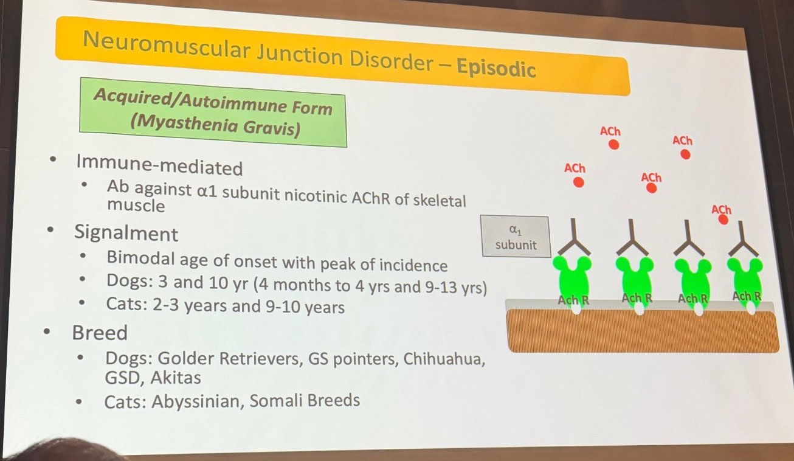
- 免疫媒介：抗骨骼肌菸鹼型 ACh 受體 α1 次單元的抗體。
- 發病年齡雙峰：
- 狗：3 歲與 10 歲（4 個月–4 歲、9–13 歲）
- 貓：2–3 歲與 9–10 歲
- 好發品種：
- 狗：黃金獵犬、德國短毛指示犬、吉娃娃、德國牧羊犬、秋田
- 貓：阿比西尼亞、索馬利
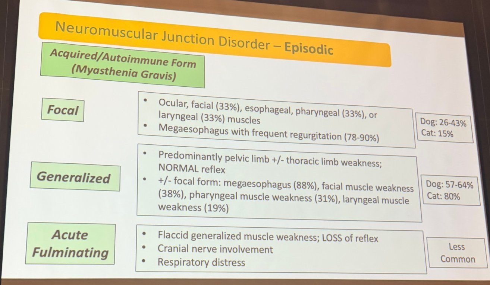
| 型態 | 表現 | 比例 |
|---|---|---|
| 局部型 | 眼、顏面（33%）、食道、咽（33%）或喉（33%）肌肉；巨食道合併頻繁逆流（78–90%） | 狗 26–43% 貓 15% |
| 全身型 | 以後肢為主 ± 前肢無力；反射正常；± 局部型表現：巨食道（88%）、顏面無力（38%）、咽無力（31%）、喉無力（19%） | 狗 57–64% 貓 80% |
| 急性猛爆型 | 弛緩性全身無力、反射消失；腦神經受影響；呼吸窘迫 | 較少見 |
💡 臨床重點：
• 不明原因的巨食道一定要驗 ACh 受體抗體（局部型可能只有巨食道）。
• 全身型的反射正常，休息時檢查可能正常，要讓牠走到無力再評估。
• 確診後拍胸腔 X 光找前縱膈腫塊（胸腺瘤），副腫瘤性 MG 預後不同。
• 貓以全身型為主（80%），且胸腺瘤比例高。
• 主要死因是吸入性肺炎：抬高餵食、監測呼吸。
📸 現場 臨床症狀
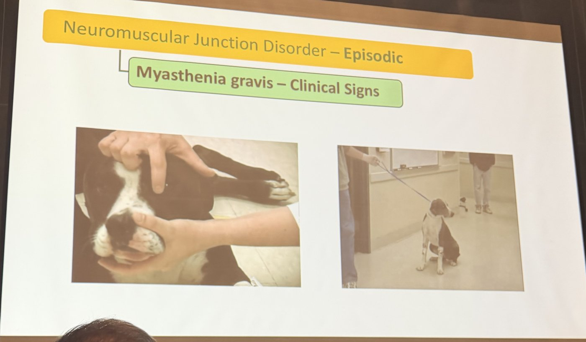
💡 投影片是兩段影片的截圖。左：反覆觸碰內眼角，眨眼越來越弱、最後閉不起來（眼瞼反射疲乏），是診間就能做的簡單測試。右：散步一小段就坐下、休息後又能走，是典型的運動誘發無力。
📸 現場 相關的後天疾病
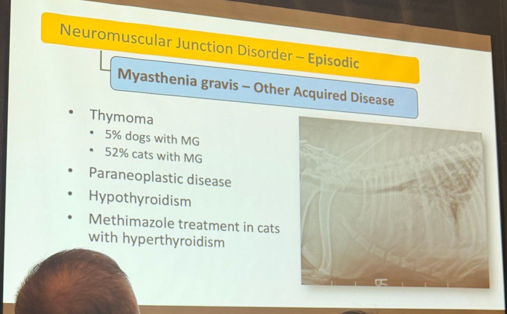
- 胸腺瘤：5% 的 MG 狗、52% 的 MG 貓。
- 副腫瘤性疾病。
- 甲狀腺功能低下。
- 甲狀腺功能亢進的貓使用 methimazole 治療。
💡 貓的 MG 一半以上有胸腺瘤：貓一確診就要拍胸腔 X 光，必要時做 CT。甲亢貓吃 methimazole 後出現無力或頸部腹屈，要想到藥物引起的 MG（通常停藥後改善）。
📸 現場 診斷
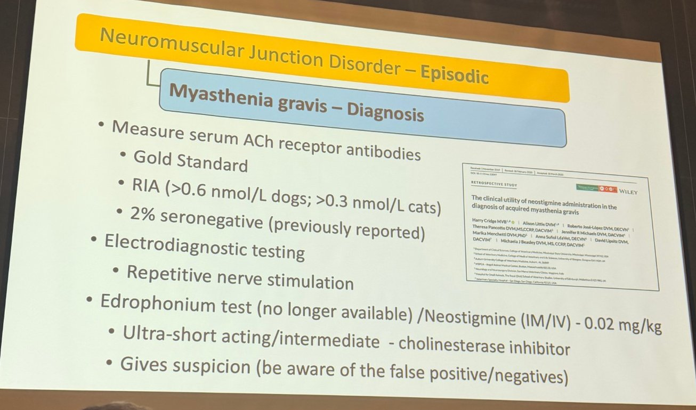
- 血清 ACh 受體抗體：黃金標準。
- 放射免疫分析（RIA）：狗 > 0.6 nmol/L、貓 > 0.3 nmol/L。
- 約 2% 血清陰性（過去報告）。
- 電學檢查：反覆神經刺激（RNS）。
- Edrophonium 試驗（已無法取得）／Neostigmine（IM／IV）0.02 mg/kg：
- 超短效／中效的膽鹼酯酶抑制劑。
- 只能提高懷疑，要注意偽陽性與偽陰性。
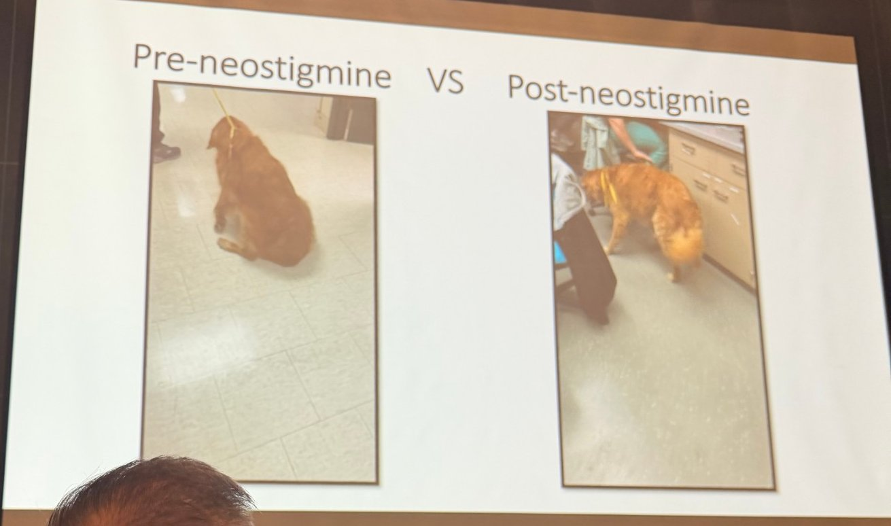
💡 Neostigmine 試驗的做法：先讓狗走到無力，打藥後幾分鐘內明顯改善即為陽性。要準備 atropine 以防膽鹼作用過強（流涎、心搏過緩、嘔吐）。偽陽性可見於其他接合處或肌肉疾病，偽陰性見於嚴重病例；確診仍要等抗體結果（需數天），但可以先開始治療。RNS 的典型表現是振幅遞減（和蜱麻痺不同）。
📸 現場 新的分類方式？
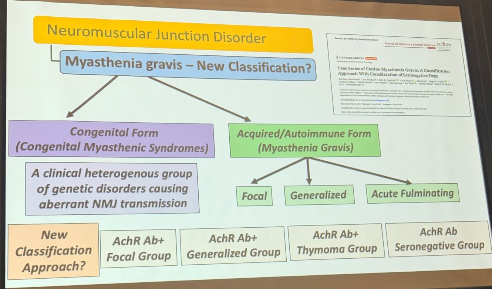
傳統分類依臨床表現（局部、全身、急性猛爆）；新提出的方式改依抗體與病因分組：
| 新分組 |
|---|
| AChR 抗體陽性：局部組 |
| AChR 抗體陽性：全身組 |
| AChR 抗體陽性：胸腺瘤組 |
| AChR 抗體陰性組（seronegative） |
💡 這種分法參考人醫：胸腺瘤相關與血清陰性的 MG 治療和預後不同，分開看比較有意義。血清陰性不代表不是 MG：人醫有些病人帶的是其他抗體（如 MuSK），獸醫目前多數驗不到；臨床、RNS、neostigmine 反應都符合時，仍可依 MG 治療。
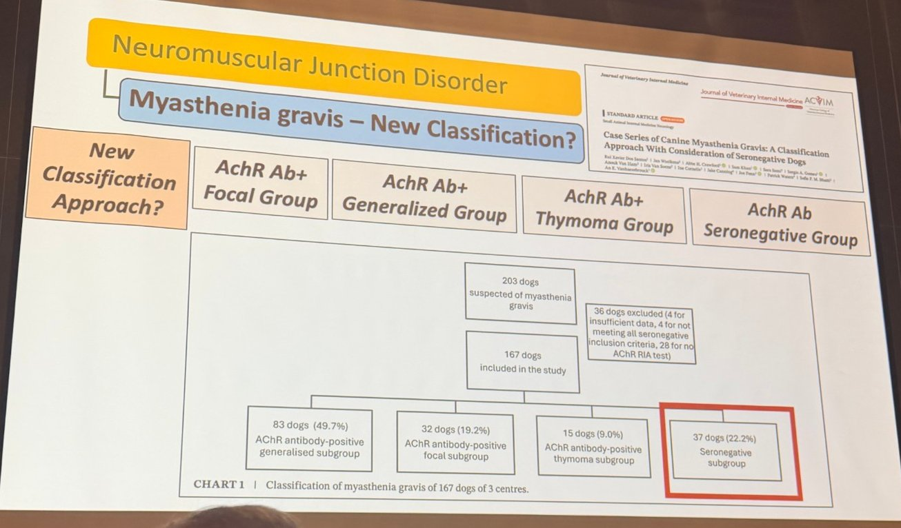
| 組別（167 隻狗，3 家中心） | 數量 |
|---|---|
| AChR 抗體陽性：全身組 | 83 隻（49.7%） |
| AChR 抗體陽性：局部組 | 32 隻（19.2%） |
| AChR 抗體陽性：胸腺瘤組 | 15 隻（9.0%） |
| 血清陰性組 | 37 隻（22.2%） |
原本懷疑 MG 的 203 隻，排除 36 隻（4 隻資料不足、4 隻不符血清陰性納入條件、28 隻沒驗 AChR RIA）。
💡 講者用紅框標出的重點：血清陰性佔 22%，遠高於過去說的 2%。抗體陰性時不能排除 MG。
📸 現場 電學診斷：反覆神經刺激（RNS）
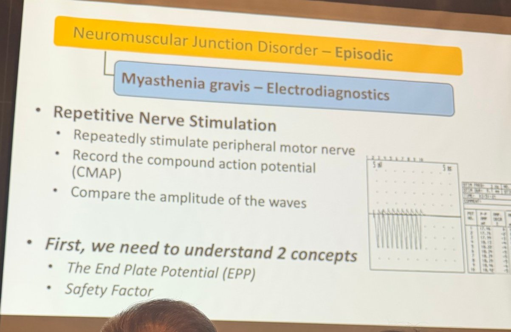
- 反覆刺激周邊運動神經，記錄複合肌肉動作電位（CMAP），比較每一波的振幅。
- 先要理解兩個概念：終板電位（EPP）與安全係數（safety factor）。
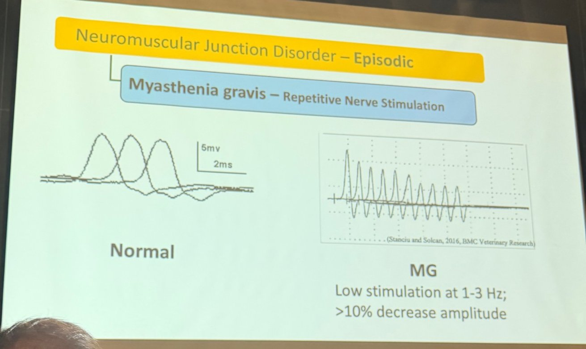
- 正常：每一波振幅一樣。
- MG：以 1–3 Hz 低頻刺激，振幅下降 > 10%（遞減）。
💡 原理：正常時每次釋放的 ACh 產生的終板電位遠超過觸發肌肉動作電位所需（這個餘裕就是安全係數）。連續刺激時每次釋放的 ACh 會稍微減少，正常肌肉因為有餘裕仍全部收縮；MG 受體少、餘裕不足，越來越多肌纖維達不到閾值，CMAP 就一波比一波小。這和臨床上「越動越無力」是同一件事。
📸 現場 治療
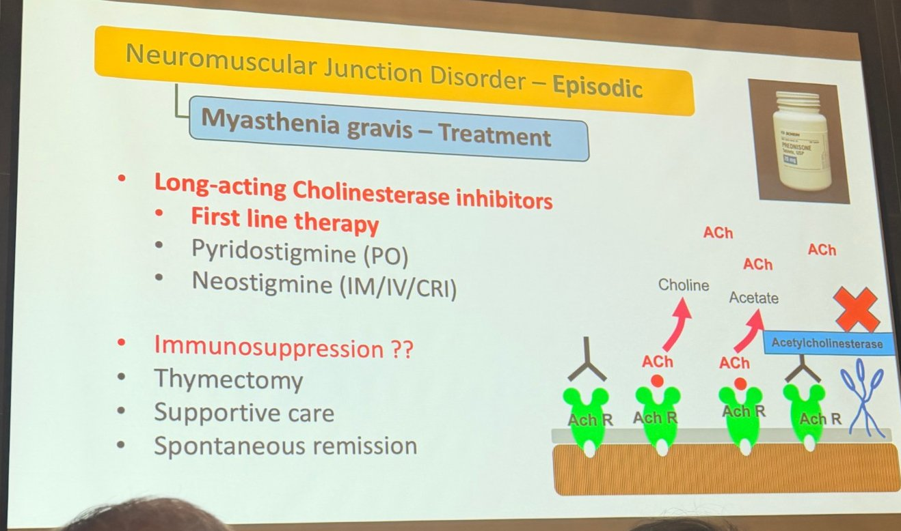
- 長效膽鹼酯酶抑制劑：第一線治療
- Pyridostigmine（口服）
- Neostigmine（IM／IV／CRI）
- 免疫抑制？？（講者打了兩個問號）
- 胸腺切除（有胸腺瘤時）。
- 支持療法。
- 自發緩解。
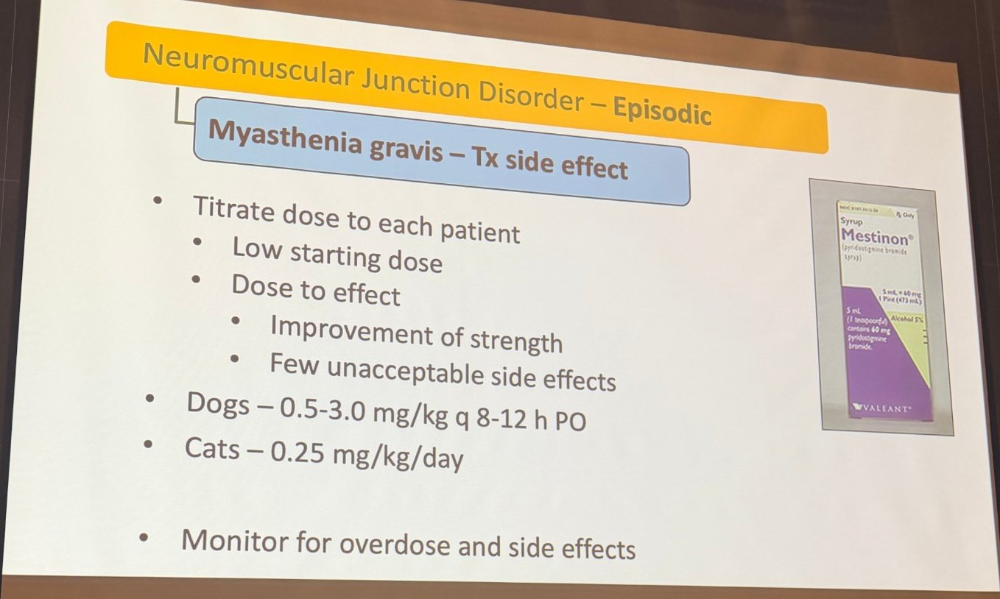
- 依每隻病患調整劑量：從低劑量開始，依效果調整（肌力改善、副作用可接受）。
- 狗：0.5–3.0 mg/kg PO q8–12h
- 貓：0.25 mg/kg/day
- 監測過量與副作用。
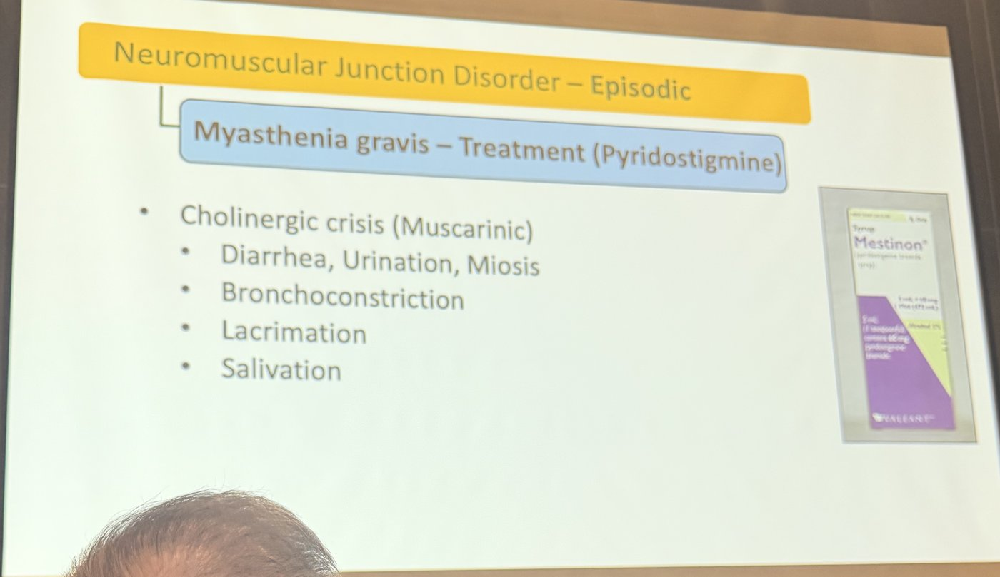
- 膽鹼危象（蕈毒鹼型）：腹瀉、排尿、瞳孔縮小、支氣管收縮、流淚、流涎。
💡 補充：
• 好記的口訣是 SLUDGE（流涎、流淚、排尿、排便、腸胃不適、嘔吐）加上 DUMBBELLS 裡的心搏過緩與支氣管收縮。過量時也可能出現肌肉顫動，甚至無力加重（菸鹼型作用），和 MG 本身的無力很難分；不確定時先減量。Atropine 可拮抗蕈毒鹼型症狀。
• 「免疫抑制？？」的爭議：類固醇剛開始可能讓無力暫時惡化，且有吸入性肺炎時會增加感染風險；所以多數先用 pyridostigmine，反應不佳再低劑量開始免疫抑制（或用 azathioprine、mycophenolate）。
• 狗約 89% 在平均 6 個月內自發緩解（Shelton and Lindstrom 2001）：要定期複驗 AChR 抗體，降回正常即可嘗試停藥。胸腺瘤型則不會自發緩解。（下方 Forgash 2021 的數字低很多，見預後。）
📸 現場 預後
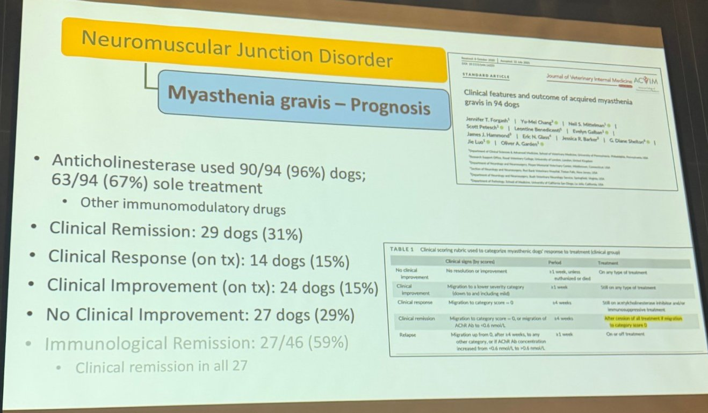
- 抗膽鹼酯酶藥：90/94（96%）使用；63/94（67%）只用這一種，其餘合併其他免疫調節藥。
| 結果（94 隻） | 數量 | 定義（Table 1） |
|---|---|---|
| 臨床緩解 | 29（31%） | 停止所有治療後仍維持 0 分（或 AChR 抗體 <0.6 nmol/L），≥4 週 |
| 臨床反應（治療中） | 14（15%） | 0 分，但仍在用藥 |
| 臨床改善（治療中） | 24（投影片寫 15%） | 降到較輕的嚴重度分類 |
| 沒有改善 | 27（29%） | 沒有緩解或改善（或安樂死、死亡） |
- 免疫學緩解（抗體降到正常）：27/46（59%）；這 27 隻全部也達到臨床緩解。
💡 判讀：真正停藥後緩解只有約 1/3，比早期 Shelton 的「89% 自發緩解」保守很多（族群和定義不同）。但只要抗體降回正常，就幾乎一定會臨床緩解：追蹤 AChR 抗體是決定能否停藥的實用指標。約 3 成沒有改善，跟飼主溝通預後時要說清楚，主要死因仍是吸入性肺炎。
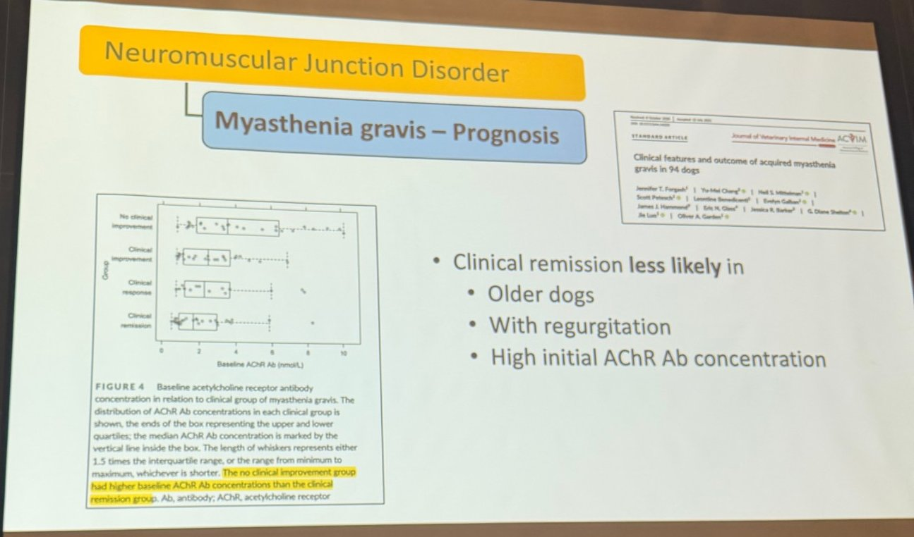
較不容易臨床緩解的因子：
- 年紀較大的狗
- 有逆流（巨食道）
- 初始 AChR 抗體濃度高：「沒有改善」組的初始抗體濃度高於「臨床緩解」組（Figure 4 標黃）。
較容易臨床緩解：
- 年輕的狗
- 合併內分泌疾病的狗？（講者打問號）
💡 診斷時的抗體數值也有預後意義，可以寫進病歷、用來和飼主討論。逆流代表巨食道，吸入性肺炎風險高，是預後差的直接原因。合併內分泌病（如甲狀腺低下）較易緩解，可能是治療潛在疾病後 MG 也跟著改善。
📸 現場 預後與治療追蹤（另一張投影片）
這張照片拍到兩張投影片切換中的重疊畫面，以下依可辨識的文字整理。
- 重複驗 AChR 抗體效價來指引治療方向。
- 免疫抑制治療要逐漸減量。
- 早期預後保留：
- 治療反應差者，2 週內死亡率 50%。
- 1 年死亡率 40%。
- 自發緩解（Shelton and Lindstrom 2001）。
📸 現場 新分類方式：臨床表現與預後
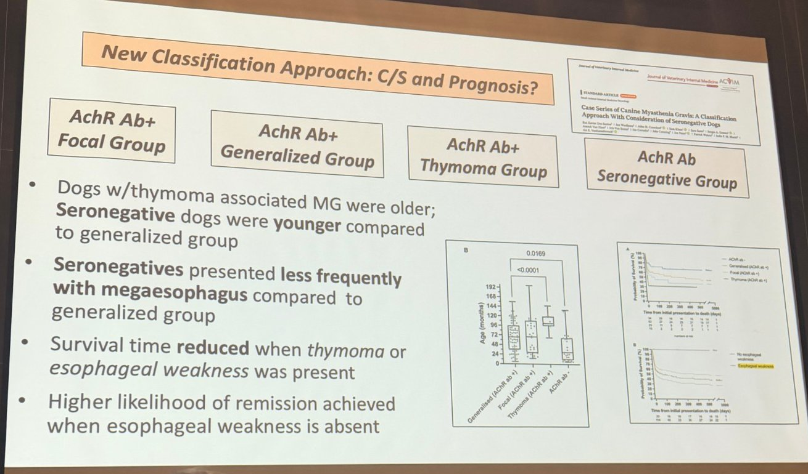
- 胸腺瘤組的狗年紀較大；血清陰性組的狗比全身組年輕。
- 血清陰性組較少有巨食道（和全身組相比）。
- 有胸腺瘤或食道無力時，存活時間縮短。
- 沒有食道無力時，較容易達到緩解。
💡 綜合兩篇研究：預後最關鍵的是食道（巨食道／逆流 → 吸入性肺炎）和胸腺瘤。初診就該拍胸腔 X 光同時看這兩件事，並依此和飼主討論預後與照護強度。
📸 現場 總整理：急性 LMN 四肢輕癱的四大病
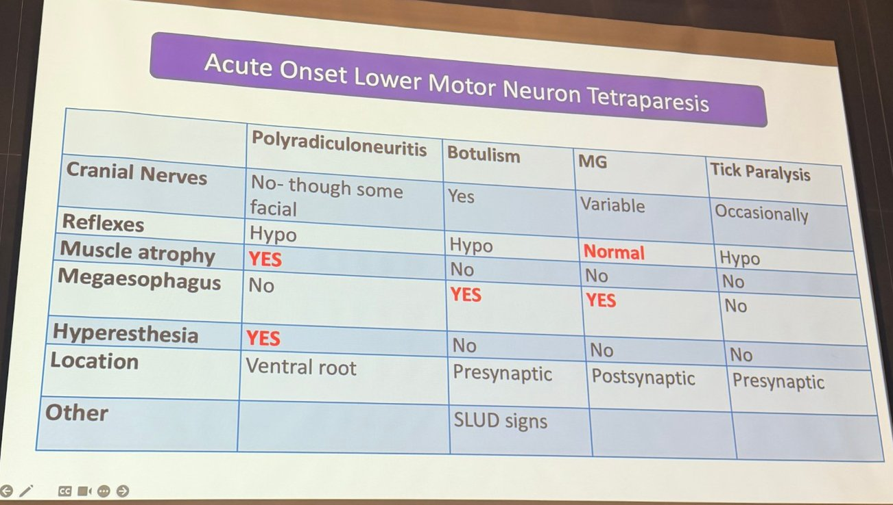
| 多發性神經根神經炎 | 肉毒桿菌 | 重症肌無力 | 蜱麻痺 | |
|---|---|---|---|---|
| 腦神經 | 無（部分有顏面） | 有 | 不一定 | 偶爾 |
| 反射 | 低下 | 低下 | 正常 | 低下 |
| 肌肉萎縮 | 有 | 無 | 無 | 無 |
| 巨食道 | 無 | 有 | 有 | 無 |
| 感覺過敏 | 有 | 無 | 無 | 無 |
| 位置 | 腹側神經根 | 突觸前 | 突觸後 | 突觸前 |
| 其他 | SLUD 症狀（自主神經） |
💡 速記：萎縮＋感覺過敏→神經根神經炎；反射正常＋巨食道→重症肌無力；巨食道＋自主神經症狀→肉毒桿菌；什麼都沒有、找到蜱→蜱麻痺。
📸 現場 肌病（Myopathy）的表現
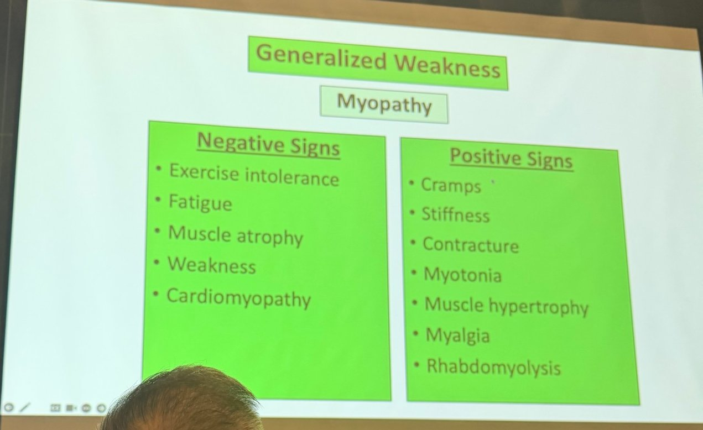
負向症狀（少了什麼）
- 運動不耐
- 疲勞
- 肌肉萎縮
- 無力
- 心肌病
正向症狀（多了什麼）
- 痙攣
- 僵硬
- 攣縮
- 肌強直（myotonia）
- 肌肉肥大
- 肌肉痛
- 橫紋肌溶解
💡 和神經病變、接合處病變的差別：肌病常有正向症狀（僵硬、肥大、痛），反射多半正常，CK 上升是最好的篩檢。心肌病列在負向症狀：肌肉失養症等全身性肌病也會侵犯心肌，要做心臟評估。
📸 現場 急性進展肌病：肌炎（Myositis）
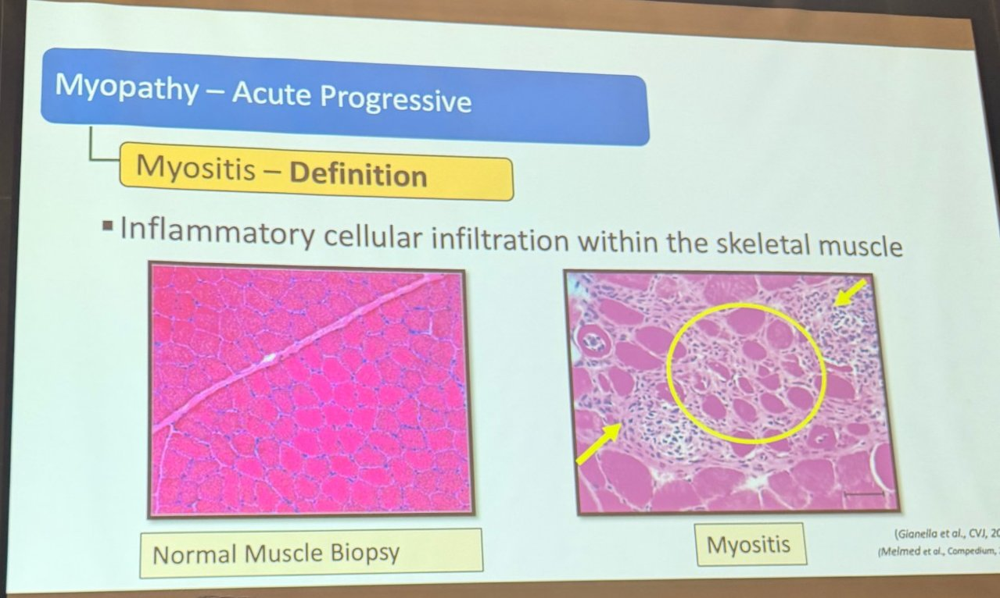
- 定義：骨骼肌內有發炎細胞浸潤。
📸 現場 感染性多發性肌炎
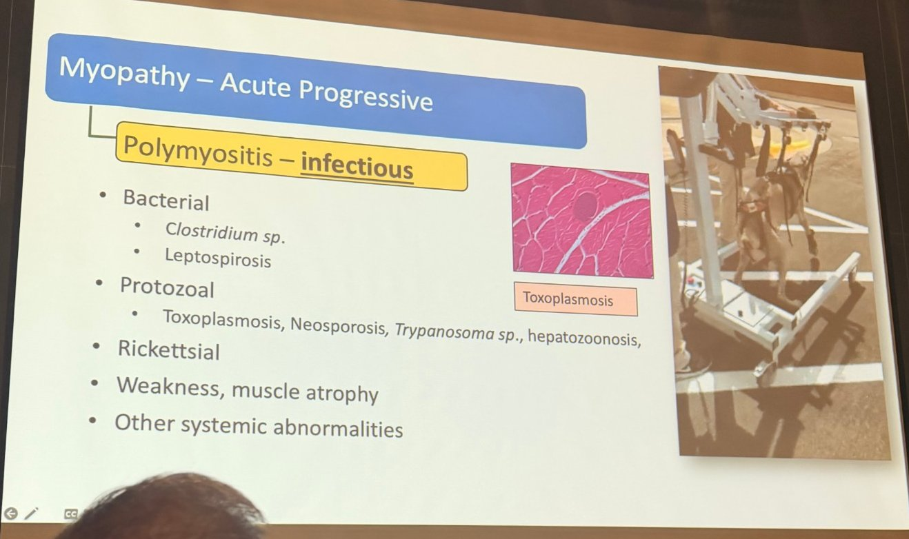
- 細菌：Clostridium、鉤端螺旋體。
- 原蟲：弓形蟲、新孢子蟲、Trypanosoma、肝簇蟲（hepatozoonosis）。
- 立克次體。
- 無力、肌肉萎縮；以及其他全身性異常。
📸 現場 免疫媒介性多發性肌炎
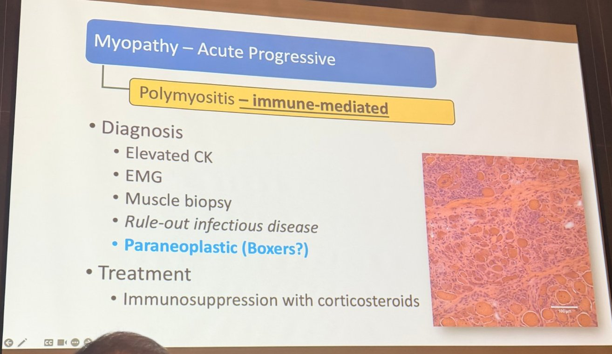
- 診斷：CK 上升、EMG、肌肉切片、排除感染、副腫瘤性（Boxer？）。
- 治療：類固醇免疫抑制。
交叉模型：腫瘤細胞表現肌炎特異的自體抗原，引發的 CD4、CD8 T 細胞與 B 細胞反應，也會攻擊同樣表現這些抗原的受損／再生肌肉。
💡 所以免疫媒介肌炎一定要找腫瘤（胸腹部影像），Boxer 的副腫瘤性肌炎多和淋巴瘤有關。用類固醇前要先排除弓形蟲、新孢子蟲（可先驗血清學，或經驗性給 clindamycin）。
📸 現場 咀嚼肌炎（Masticatory Myositis）
- 免疫攻擊 Type 2M 肌纖維（只存在咀嚼肌）。
- 急性：咀嚼肌腫脹、疼痛。
- 慢性：嚴重肌肉萎縮、張口困難（trismus）。
- 診斷：2M 抗體效價。
- 治療：免疫抑制，類固醇慢慢減量。
💡 顳肌萎縮、張不開嘴、嘴巴痛：先驗 2M 抗體（特異性高）；已經用類固醇的狗可能偽陰性，要在治療前採血。類固醇常需要數月才能停，太快減量容易復發；嚴重 trismus 不要在麻醉下強行撐開嘴巴（可能骨折）。
📸 現場 其他類型的肌炎
皮膚肌炎（Dermatomyositis）
- 侵犯皮膚、血管、肌肉（咀嚼肌、四肢遠端）
- ± 巨食道、吞嚥困難
- 好發：Collie、Shetland 牧羊犬
眼外肌炎（Extra-ocular myositis）
- 急性：眼球突出
- 慢性：纖維化 → 限制性斜視、眼球內陷
📸 現場 急性進展肌病：缺血性肌病（Ischemic Myopathy）
- 繼發於主動脈或髂動脈血栓。
- 肢體疼痛、冰冷、脈搏弱、缺血性肌肉壞死。
- CK 明顯上升。
- 貓與心肌病相關；凝血異常。
- 治療：支持療法、輸液、溶栓。
💡 就是貓的 FATE（主動脈血栓栓塞）。「5P」：疼痛、無脈、蒼白（肉墊）、麻痺、冰冷。這是會被誤認為脊髓病的「肌病」：後肢 LMN 樣癱瘓，但其實是肌肉缺血。可參考 TSFM 系列的 FATE 筆記。
📸 現場 慢性進展肌病：代謝性（庫欣肌病）
- 僵硬、高跨步的步態，後肢肌肉無力、僵直。
- CK 可能上升（±）。
- EMG：假性肌強直（pseudomyotonia）放電。
💡 庫欣病狗後肢「直直地走」、不太彎曲關節，就是庫欣肌病。治療庫欣後無力常改善，但僵硬（肌強直）不一定可逆。這也是前面「慢性／代謝」鑑別診斷中的「Cushing myopathy」。
📸 現場 總結：全身無力的診斷流程
| 懷疑 | CK | 下一步 |
|---|---|---|
| 肌病（陣發性的部分肌病、持續性肌病） | 上升 | EMG、肌肉切片 |
| 重症肌無力（陣發，嚴重時持續） | 正常 | Neostigmine 試驗；AChR 抗體效價 |
| 多發性神經病變（持續） | 正常 | EMG、神經傳導、CSF、肌肉與神經切片 |
💡 實務順序：先排除全身性疾病（血糖、電解質、貧血、心臟）→ 判斷陣發或持續 → 驗 CK（最便宜、最快分出肌病）→ CK 正常再分 MG（AChR 抗體）或神經病變（電學檢查）。AChR 抗體要送外檢數天，可以先做 neostigmine 試驗並拍胸腔 X 光（巨食道、胸腺瘤、吸入性肺炎）。
📸 現場 練習病例 1：3 歲 Papillon
- 神經性的無力？也許，需要實際做神經學檢查。
- 定位：顱外（全身性疾病）。
- 鑑別診斷：中毒 vs 發炎／感染。
- 治療：支持療法。
- 答案：誤食安非他命。
💡 呼應「先排除全身性疾病」：看起來像神經問題，其實是中毒。病史一定要問有沒有接觸人類藥物。
📸 現場 練習病例 2：8 歲 Keeshond（荷蘭毛獅犬）
- 神經性？本來以為是，但是……
- 定位：頸部 vs 神經肌肉接合處。
- 鑑別診斷：後段頸髓病變（如搖擺症候群）vs 椎間盤疾病 vs 重症肌無力 ± 骨科問題。
- 檢查：頸部 MRI、CSF、乙醯膽鹼受體抗體。
💡 雙側十字韌帶問題的狗不願站、蹲著走，很像後肢或四肢無力。做昂貴的 MRI 之前，先做完整的骨科觸診（抽屜試驗、脛骨推力試驗），並確認本體感覺是否真的異常：骨科病例的姿勢反應應該正常（只要支撐住疼痛的腳）。